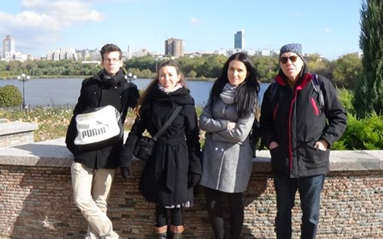
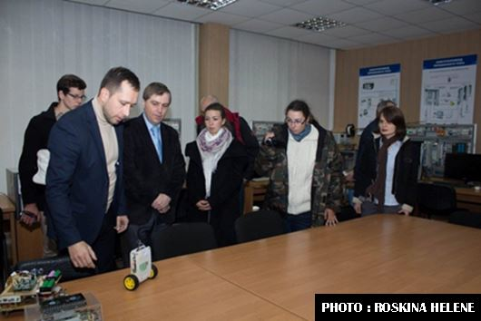
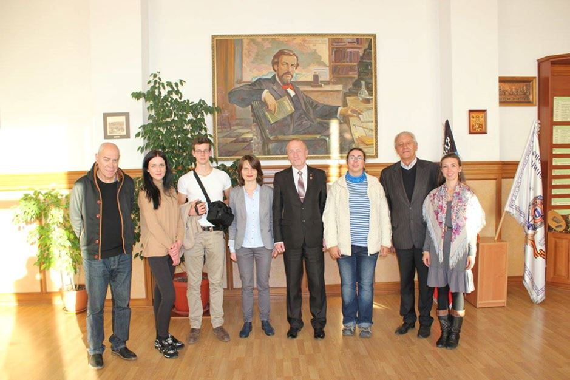
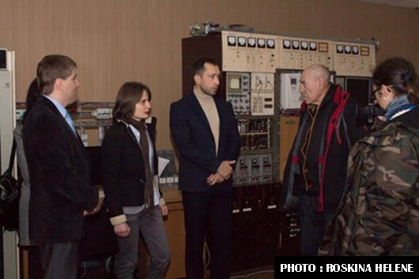
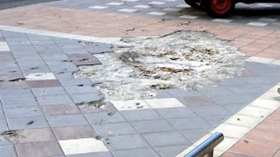
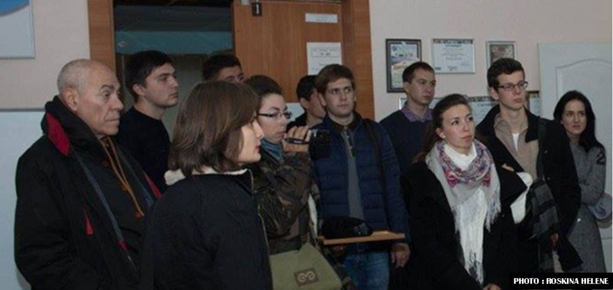

Donc, je suis allé à Donetsk ! Je sais, je sais, je suis en retard ! C’était le 16 octobre, mais comme mon voyage ne se limitait pas juste à cette destination, je vous fais un petit compte rendu une fois rentré.
J’étais en bonne compagnie avec un couple de jeunes résistants à la pensée unique et au froid anormal pour cette saison au Donbass, Antoine et Roxane à qui je transmets mes salutations les plus chaleureuses. Il y avait un quatrième très sympathique membre de notre troupe d’élite, Chantal, qui a dû repartir de Rostov chez elle en Suisse à cause d’un visa mal foutu qui aurait créé des problèmes au passage de la frontière de Donetsk. Elle compte revenir au mois de mai. C’est pour vous prévenir qu’il faut être vigilant quant à la demande de visa, tout doit être en règle !
 Avec Christelle Néant, caméra au poingNous étions accompagnés en permanence par l’étonnante Christelle Néant qui a épousé la cause donbassienne avec toute son énergie hors pair ! Mon seul regret a été de ne pas avoir pu voir mon ami Erwan Castel qui était dans la zone des combats qui continuent et s’intensifient les derniers jours, encore hier il y a eu des morts lors des bombardements des gros calibres durant des heures, tout ça interdit par cette foutaise des accords de Minsk, bien évidemment.
Alors, mes impressions !
Tout d’abord il y a une énorme différence entre tout voir à télé (russe, ça va de soi) et sur internet et de « ses propres yeux vu ». Comme on dit en France « c’est pas pareil ». Est-ce pénible ? Bien sûr, tu prends sur toi une partie de leur malheur, obligé. Tu ne peux pas sortir indemne, mais en même temps, écoutez-moi bien, c’est revigorant et on se sent mieux en rentrant. Je m’explique ! Ces gens-là c’est du costaud ! Au début de la guerre que mène l’Ukraine contre les résistants du Donbass, seule une rare voiture traversait la ville à cause des bombardements incessants, des snipers et des diversions. Pendant notre séjour, nous sommes tombés à deux reprises dans des bouchons, certes insignifiants, mais quand même. En une année, 2015, ils ont réussi à tout réparer et pas seulement le centre-ville.
Aujourd’hui Donetsk est une ville moderne, extrêmement propre (tu cherches des poubelles pour écraser ton mégot), avec beaucoup de chantiers. S’il n’y avait pas de « couvre-feu » et des « visites » des arrondissements bombardés par l’armée ukropithèque on se croirait dans une ville prospère, moderne, avec la vie culturelle très dense, estudiantine, bref bien sous tous les rapports ! Et après, vous faites un petit saut de cinq minutes en voiture (comme de Bastille à la République) sans comprendre vraiment ce qui s’est passé puisque parfois juste une centaine de mètres sépare des larges avenues bien animées des parties nomansland de la ville. Il n’y a pas une voiture et très peu d’ombres de passants. Des grands bâtiments de 7-10 étages avec des vitres brisées et la trace des obus, certains bouchés avec des sacs de sable et des matelas et on aperçoit même une petite lumière, car il y a des gens qui habitent dedans, depuis un an beaucoup de gens reviennent. J’ai une photo surréaliste où deux bonshommes réparent le toit d’une maison à première vue inhabitable.

Visite de l’Université nationale technique de Donetsk
 Les bombardements du centre-ville de Donetsk ont laissé des traces encore visibles à certains endroits près de l'Avenue Pouchkine, et sur le campus de l'Université Nationale Technique de Donetsk, qui a été touché à une dizaine de reprisesSur les murs des bâtiments est écrit « abri » et une flèche montre où il faut courir. Une fois j’ai remarqué des babouchkas triant dans la cour des morceaux de meubles abandonnés, sûrement pour se chauffer et encore deux femmes avec une poussette, elles seront obligées de faire 2 km jusqu’à l’arrêt de bus, là où la vie plus au moins normale a repris ses droits.
J’ai vu, à un kilomètre du fameux aéroport de Donetsk totalement détruit, dans la zone pavillonnaire de la ville, des maisons et des datchas totalement anéanties ! Ça faisait penser aux archives de la deuxième guerre mondiale, couleur en moins. Parmi ces ruines une femme « promenait » cinq ou six chèvres. Où elles crèchent et comment elle a réussi à garder son petit troupeau reste une énigme. L’homme est vivace et les donbassiens en particulier.
La gare routière ! Pareil, si je réalisais un film sur la guerre j’aurais créé ce décor. Regardez les photos et imaginez une seconde qu’elle était bourrée de monde attendant leurs bus ! Apparemment, la ville n’a pas de moyens pour des travaux, tout est laissé en l’état. La valise recroquevillée m’a fait beaucoup de mal, j’ai vu trop de films sur la deuxième guerre mondiale.
Le programme était dense. Beaucoup de visites et des rencontres, l’Université, des monuments historiques, des gens amoureux de leur ville qui n’ont aucune intention de la céder à la junte kiévienne. Des rencontres avec des volontaires français, des gars courageux, sympas et pleins d’humour, marque de fabrique pour un Français qui se respecte.
Les amateurs de l’âme slave vont être bien servis. Je me souviens, comme si c’était hier, du dernier repas organisé par Roman, président de l’association des anciens combattants et costaud au-dessus de la moyenne. Repas à base d’eau de vie du cru (à volonté… de notre hôte) et de montagnes de pirojkis. C’était une tablée internationale, deux Finlandais, un Allemand, un Italien et notre vaillante brigade, qui, je vous assure, a défendu avec honneur les couleurs de la France en levant le coude. Heureusement Christelle, notre ange gardien ne boit pas et conduit comme un as, je crache trois fois par-dessus l’épaule gauche pour que ça dure et pour ne pas porter la scoumoune aux braves voyageurs qui, je l’espère bien, vont nous suivre.
Partager cette page